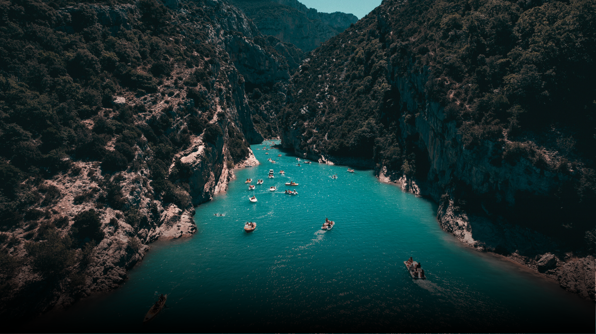
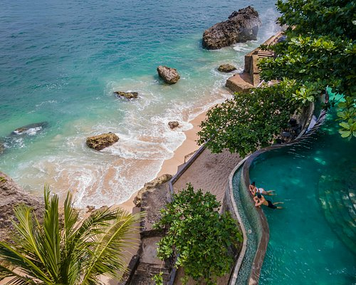
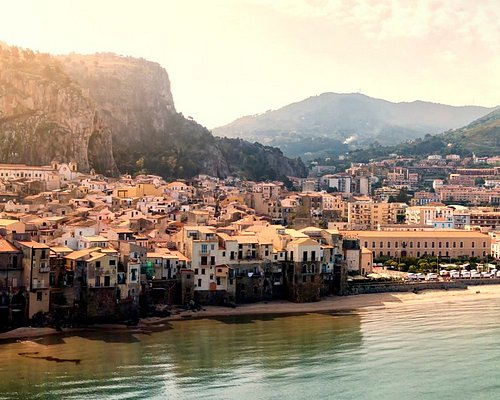
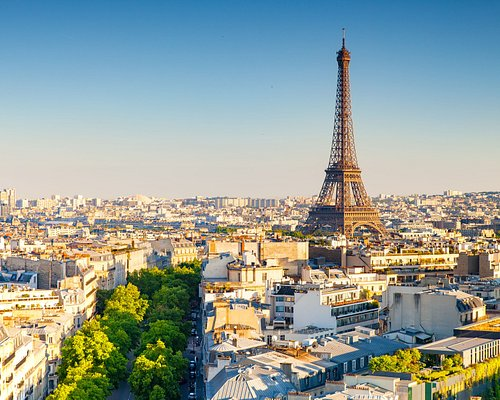
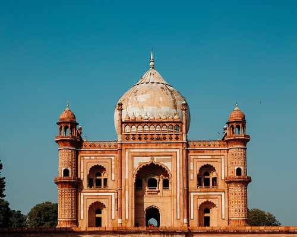
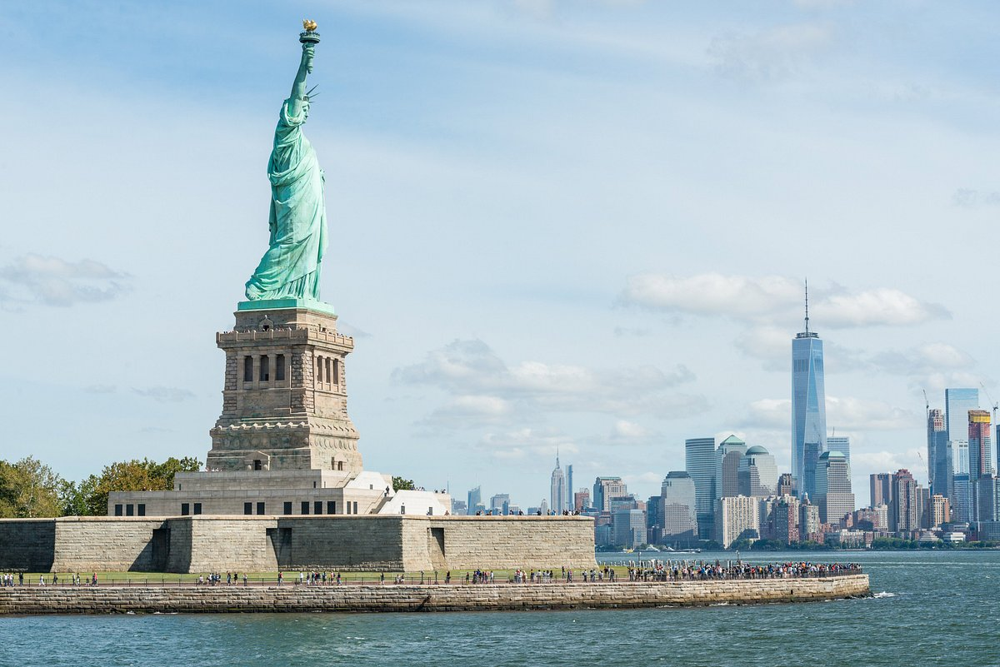

Dream,
Plan,
Go.
Pack your bags, we got the rest!

Pack your bags, we got the rest!





Paris lives up to its hype: A city with unbelievable food and culture, plus stunning views everywhere you turn. With 18 arrondissements, it’s a lot to see in one trip, but each neighbourhood has a personality all its own. You can’t miss the iconic 7th, where art and history meet—there’s the Eiffel Tower, sure, but the impressive Musée du quai Branly is just a short walk away. It houses an amazing collection of indigenous art. Or, hit up Montmartre (the 18th), with its boho shops and cosy brasseries. It’s a must-stop on the way up or down from Sacre Coeur. While the French practically invented fine dining, don’t skip the street food—Paris has world-class kebabs and falafel. But no matter where you are, be sure to pop into a sidewalk cafe, sip a glass of wine, and people watch—it’s the way to get a taste of true Parisian culture.